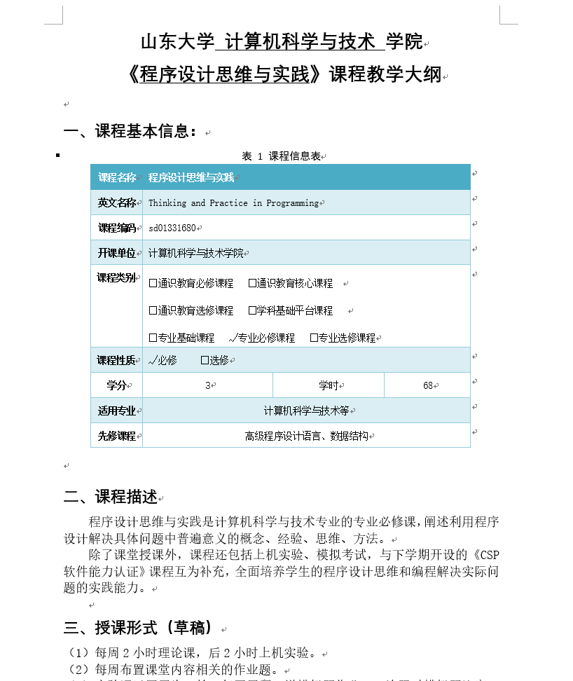

前言
程序设计思维与实践是计算机科学与技术专业的专业必修课，阐述利用程序设计解决具体问题中普遍意义的概念、经验、思维、方法。除了课堂授课外，课程还包括上机实验、模拟测试，与下学期开设的《CSP软件能力认证》课程互为补充，全面培养学生的程序设计思维和编程解决实际问题的实践能力。
程序设计思维与实践 (Thinking and Practice in Programming)，是学院创新性课程设置，为提高大家程序设计水平，充分考虑各方面情况，研究决定聘用编程高手引领大家学习。身边的人，熟悉的人，刚刚成长起来的人，与大家更有共同语言，交流更方便快捷。
—— 来自指导老师言
我的总结与思考
"缘起" —— 故事的发生
程序设计思维与实践 （下面简称 “程设”），后来我在为之写上的英文名是 Thinking and Practice in Programming（灵感来自 Thinking in Java，我觉得较为贴切）。
在学院的支持以及栾老蔡老的争取下，这门课诞生了，开课第一年 2019 年，也就是我的大二，由熟悉的 ACM 实验室的学长给我们上课，世豪/活鱼/玉鑫/双乐，这是第一届的讲师团队，加上宝盒他们也就是第一届的 TA 团队。
当时这门课简直就是 ACM 实验室必修课的弱化版，ACM 实验室的小伙伴们听课都十分轻松，看着一些同学从 “抓耳挠腮” 到懵逼，像极了自己大一时刚加入 ACM 时的样子，十分好玩。当时没有意识到，这其实同样也是我们第二年时想要着力改变但却不得不权衡的一点。
"流" —— 团队与工作流
2020 年初，考试周，教务预选课，我看到 18 级的课表里有 “程设” 这门课，当时试着联系了一下蔡老和栾老，栾老表示今年让我牵头搞一搞这件事，拉上了东东，我们四个人碰了碰面聊了聊。当晚，凑齐了瑞瑞/qq/ZJM/苟狗学长在内的 6 人，组成了第二届的 TA 团队。
我们当晚在 N3-237 把 19 年的大纲大改特改，定下了 16 节课的大纲和内容初稿。我拿出 “操作系统教学大纲”，拷贝，重命名为 “程序设计思维与实践教学大纲”，想了想，在英文名那填上了 Thinking and Practice in Programming，填了填其他文字，把 16 节课程设计的表格塞进去。发给了栾老，栾老说好的我和蔡老师审审看。
 寒假的时候备好了一半的课，疫情原因，开启了直播讲课的生涯（哭笑），每次讲课前都得自己从头到尾预讲一遍，梳理自己的讲课流，所以实际讲课还算发挥正常。每节课就是设计内容框架(详细版) -> 制作 PPT / 出课后题 -> 预讲 -> 讲课 -> 课后题 CodeReview / 验收，这样一个工作流。
"所思" —— 复盘与反思
相比于去年，今年的课程内容设计上已经跳出了 ACM 那一套，把核心目标定为了 “CSP”，让 “CSP” 作为这门课成效的真正验收方式，面向 “CSP” 设计，此外也夹杂了一些我们 6 人的私货，比如东东对于图论算法的理解、我的 C++ 技巧和模拟题技巧。
回过头来看，首先第一点要反思的是，我们没有对 CSP-T1 和 CSP-T2 引起重视，学期中的时候我们才发现 —— 课程难度曲线的起点(x=0) 其实不够低。一部分同学感觉课程难，上课跟进难度大，平时作业题也开始缺少独立完成的元素。
表象是实验课上同学们对低端题 1A 过题率不高，哪怕成绩中等偏上的同学，也会栽倒在 CSP-T1/CSP-T2 上，所以学期中我们紧急商量调整了作业题，开始灌水加水题，一方面想要提高同学的自信，毕竟一直刷难题是很打击自信心的，这也是 ACM 实验室中非 OI 选手较少的原因；另一方是重新重视 T1/T2，我们前面一直教 T4/T5 的知识点，练 T3 的大模拟，同时被 18 级 ACM/原 OI 选手插值的榜单让我们放松了警惕轻视了 T1/T2。那，经过改进后训练一段时间 T1/T2 榜单有所回升，虽然我们并不满意。
再聊聊我们讲课模式的优缺点吧：讲课模式的亮点其实是 “live coding” + 干货 + 干货 + 学长的精炼。那，这门课不像很多基础学科，拥有宏大的背景，以及所谓的时代呼唤。她就是一门汇集了《计算机导论》+《数据结构》+《离散数学》+《算法设计与分析》等众多知识点于实践性的过渡性课程，用于提升学生的代码能力（或者我觉得更本质的说法是 —— 提升程序性逻辑思维和实践能力）、对经典算法应用的融会贯通。
"所得" —— 如何改进
所以，如果有的话，对于明年程设团队我的第一类改进建议是：
- 课程难度曲线最好降低，起步缓点；
- 多刷 T1/T2 难度的水题，前期稳步提升（包括自信心和成就感的提升）；
- 重视经典算法；
- 删掉较难算法；
- 给学生减负（今年就预计出错，对学生要求偏高）；
- 最最重要：始终想着是要教会大部分学生。
第二类问题，少数的 ACM/OI 选手是变数。可能本门课的大部分知识点他们都会，仅仅起到一个复习的作用（这里提出一个观点 “酷爱算法竞赛的同学自然会加入 ACM 实验室去深入学习高级算法”，可以辨析辨析）。对于他们，我提出两种畅想，一是分级，课程大纲每节课都标注一部分拓展内容，对部分打过算法竞赛的同学提出更深的要求，好处是因材施教，缺点是课程团队成本巨大以及涉及授课内容不一致下的绩点划分，基本不可能实现；二是今年我们的方法 —— 一碗水端平，作业里有中等题和难题，难题权重小，所有同学一起面对，好处是公平（基础不一不能算数，每个人的水平本身就不可能一样）；缺点是中上游同学开始内卷，”选做”=必做，同时劝退中下游同学。
第三类问题，关于针对 CSP 的模拟训练，限时+赛后评测模式。由于今年是网络形式，大家无法在实验室同时进行模拟，就很吃亏，很难度量这部分在发挥授课效果中的比重。此外，按照形式来看，两个大班是很难同时调上实验课的，今年在家网课我们艰难尝试，而明年在学校的话估计很难调上，出两套题势在必行。更重要的是，要验证这个 “氛围+限时+赛后评测” 训练想法是否有教学效果，实践是检验真理的唯一标准嘛。
第四类问题，资产积累和复用。已经有了两届的资产积累，更别说第二届课程团队如此地用力设计课程，今后的课程团队在课程设计和资源准备上，有了借鉴，有所省力，将更多精力放在题目质量和教学效果上。
第五类问题，一定要多多复盘，多多思考，多多总结，缺乏对教学的思考一定会慢慢缺少灵魂、压抑热情。
第六类问题，自研 OJ 的迫切性，今年我们使用 VJ 做实验平台。临时自搭 Vijos、QDUOJ 做月测试平台，都在多人比赛时发现了他们的一些 Bug 和产品缺陷 (为此我们还魔改了)，我在 De 它们开源系统的 Bug 时十分痛苦。
…
"SDUOJ" —— 创新机会的未来基建
程序设计是计算机学生的必备基础，程序设计能力也在课程实验、研究生复试、工作面试中广泛出现。正因如此，国内计算机顶尖大学 (比如清北浙大) 均有由自己学校开发与维护的，支持学生训练以及课程实验设计使用的在线评测平台。
(先抛开 SE 专业的 OJ 不说，因为那个 OJ 功能太基本，且当前已没人维护)
在这个在线评测系统不可或缺的大背景下，山东大学作为一个 985、双一流高校，迫切需要一个自主研发、稳定可用、需求可控的 OJ，用于收口教学外部依赖、资产沉淀、打造教学闭环。而 SDUOJ 便是我想在离开山大前，给 SDUCS 留的礼物（在 CS，我害怕我毕业后 10 年，SDUCS 依旧没有自研的 OJ。我怕，所以我想到了，这个人非我不可，我会在大四尽力花一年时间去做好这件事，并确保她尽可能传承下去）
"做梦" —— 我所想的教学闭环
怎样形成教学闭环呢？我想的是：
现今，《计算机导论》（也就是 C++ 课），《数据结构》、《数据结构课程谁》、《程序设计思维与实践》、《CSP 软件能力认证》、《算法导论》等课程的实践部分，即实验，都是独立设计 + 人为验收 (费时费力)，或者可能依赖于三方平台，或者实验本身仅是一个实验文档，没有对实验成果进行自动化测试验证，对于课程实践部分也缺少复盘/反思/迭代，也就是资产积累。
我所想的是，SDUOJ 接入到 SDUCS 的教学生态后，C++ 课可以基于 SDUOJ 提供的能力设计各种基础的题目，提供自动化测试和反馈，同样地，《数据结构》和《程序设计思维与实践》等课更是如此。通过实验，提高学生的程序设计能力，学生在 CSP 认证中也会更出彩，学生从事科研工作不会被代码能力设瓶颈，学生就业更是有强大助力，结果就是山大学生专业素质提升。而 SDUOJ 则是成为伴随 SDUCS 学子从大一到大四学习生涯必不可少的伙伴。当然，更重要是传承。
团队总结
作为一个假假的 TM、人形任务分发器 (不是) ，为我们今年的工作做一个团队总结吧。
今年是《程序设计思维与实践》开课的第二年，依旧采用这种“反转课堂”的授课方式，”聘用编程高手引领大家学习”。知识硬核，成长飞速，大大提高了 18 级学生的编程能力，这会在他们今后课程的实验编码中或在 CSP 认证中将会得到验证。
2020 年的课程团队秉着 “这大概是 18 级同学们最后一门编程课”、”对学生负责对自己负责” 的信念，精心设计课程内容、讲授经验。如今已经圆满完成 2020 年的授课任务，比起 2019 年，有了革新，也带来了效果。
由衷地希望这门课会一直延伸、传承下去，作为 SDUCS 的一个特色。这需要同学们的证明 —— 去向学院证明，证明这门课是有意义的。
附录 课程大纲与我の授课
| 周次 | 主题 | 课程内容 | 内容 负责人 | 内容 校验人 |
|---|---|---|---|---|
| 1 | 算法复杂度、C++与STL（上） | 1、课程概述/大纲 2、程序设计竞赛相关名词，如 VJ、OJ、AC、RE 等，以及评测系统的使用 3、按题目分析复杂度：快速幂、快速乘 4、数据范围、时限以及复杂度三者关系 5、Input / Ouput 6、vector / list、algorithm (只讲 sort，结构体 sort，lambda sort) 资料：附加文档（常用技巧、IDE、白盒测试总结） 实验：IO习题、快速幂习题1道、结构体sort习题1道、暴力专题，共 26 道水题 | 张/杨 | 刘/黄 |
| 2 | C++与STL（下）、搜索（上） | 1、stack 2、queue、priority_queue 3、红黑树/哈希拉链法实现的 map/unordered_map、set/unordered_set，要求会实现红黑树STL的多关键字排序，拓展重载哈希方法、哈希因子调参 4、BFS 解题框架 5、CSP中对BFA的考察 6、BFS隐式图问题 作业：BFS 例题2道 实验：小模拟3道 | 张/杨 | 刘/黄 |
| 3 | 搜索（下）、贪心（上） | 1、DFS 八皇后、选数问题 2、CSP考察：CSP-再卖菜 (70、80、100分做法) 3、贪心热身、贪心算法、贪心指标 4、区间调度问题、最小延迟调度问题 作业：贪心2道 | 张/黄 | 刘/杨 |
| 4 | 贪心（下）、二分 | 1、区间选点问题证明 +典型例题 2、二分算法框架（比较不同写法产生的边界问题） 3、浮点数二分 4、 二分答案（25min） 作业：课上例题 | 刘/ 黄 | 张/杨 |
| 5 | 线性数据结构的应用 | 1、单调栈，及其例题 （25min） 2、 单调队列，及其例题 （25min） 3、 尺取 例题×2（30min） 4、 一维前缀和、二维前缀和，及其例题 (20min) 作业：滑动窗口 最大立方图 尺取 | 刘/黄 | 张/杨 |
| 6 | 图和树的性质与应用（上） | 1、 树的存储（邻接表、前向星）（15min） 2、 树的遍历（DFS、BFS）（35min） 3、 并查集与 Kruskal（prim）（50min） 作业：树的直径题、最小生成树题 | 张/黄 | 刘/杨 |
| 7 | 图和树的性质与应用（中） | 1、 多元最短路floyd（20min） 2、 最短路 Dijkstra（20min） 3、 Bellman-ford及队列优化（40min） 作业：最短路练习2题 | 刘/ 黄 | 张/杨 |
| 8 | 图和树的性质与应用（下） | 1、 差分约束系统（30min） 2、 图的拓扑排序（20min） 3、 图的强连通分量分解（30min） 作业：差分约束一道，拓扑排序一道 | 刘/ 黄 | 张/杨 |
| 9 | 复杂模拟题的普适性方法 | 1、题意分析与解题框架设计 2、面向对象与模拟题 3、例题演示 作业：课上模拟题1道 | 张/杨 | 刘/黄 |
| 10 | 动态规划（一） | 1、 递推（20min） 2、 数字三角形（10min） 3、 记忆化（30min） 4、 LIS（25min） 5、 LCS（15min） 作业：递推 LIS | 张/杨 | 刘/黄 |
| 11 | 动态规划（二） | 1. 背包 DP 0-1型、滚动数组 （40min） 2. 多重背包及二进制拆分（30min） 3. 完全背包（20min） 4. 输出方案 作业：0-1背包 多重背包 | 张/杨 | 刘/黄 |
| 12 | 动态规划（三） | 1、 区间dp（40min） 2、 状压dp（50min） 作业：区间dp例题、状压dp例题 | 刘/杨 | 张/黄 |
| 13 | 动态规划 （四） | 1、 树形DP（60min） 2、 单调队列优化DP（45min） 作业：树形dp例题、单调队列优化dp | 刘/杨 | 张/黄 |
| 14 | 矩阵的应用 | 1、 矩阵结构体（15min） 2、 矩阵快速幂（40min） 3、 矩阵快速幂优化DP（30min） 作业：矩阵快速幂优化DP | 刘/黄 | 张/杨 |
| 15 | 字符串 | 1、 KMP（50min）+ 例题 2、 Trie（50min）+例题 作业：KMP、Trie | 刘/黄 | 张/杨 |
| 16 | 总复习 | 预录课 | 张/杨 | 刘/黄 |
| 17 | 待定 | 增补内容 | ||
| 18 | 期末考试 |
因为 2020 年 新冠 原因，全国上网课。我们也不例外，大半部分都是网络直播授课。采用了 高校邦 平台，有回放机制。
以下展示我的一些授课回放：
- 负责的
3/4/数据班的课程首页：https://sddx.gaoxiaobang.com/#/courses/detail/37875 - Week1.算法复杂度、C++与STL(上)
- Week2.C++与STL(下) 、搜索(上)
- Week3.搜索(下)、贪心(上)
- Week6.图和树的性质与应用(上)
- Week9.复杂模拟题的普适性方法
- Week10.动态规划(一)
- Week11.动态规划(二)
- Week16.期末总复习串讲